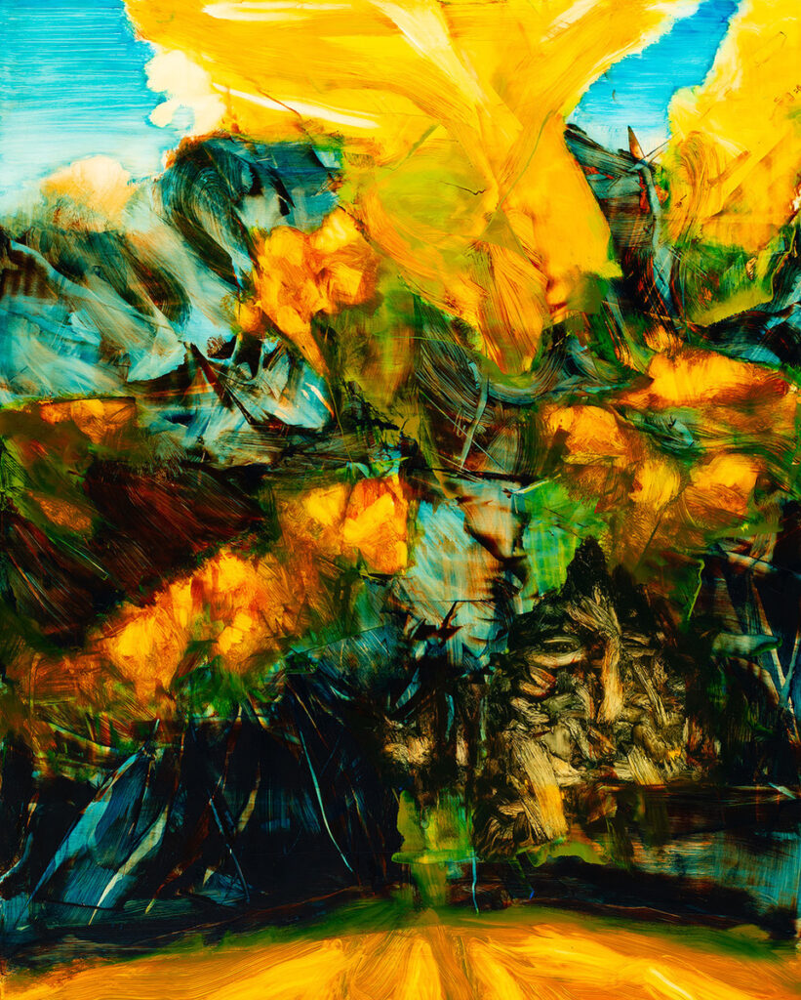
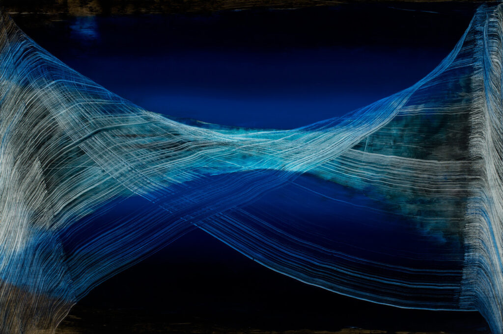
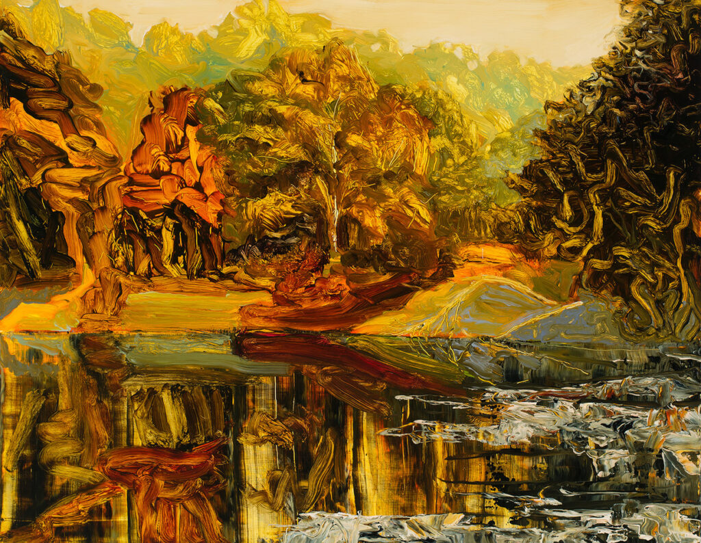
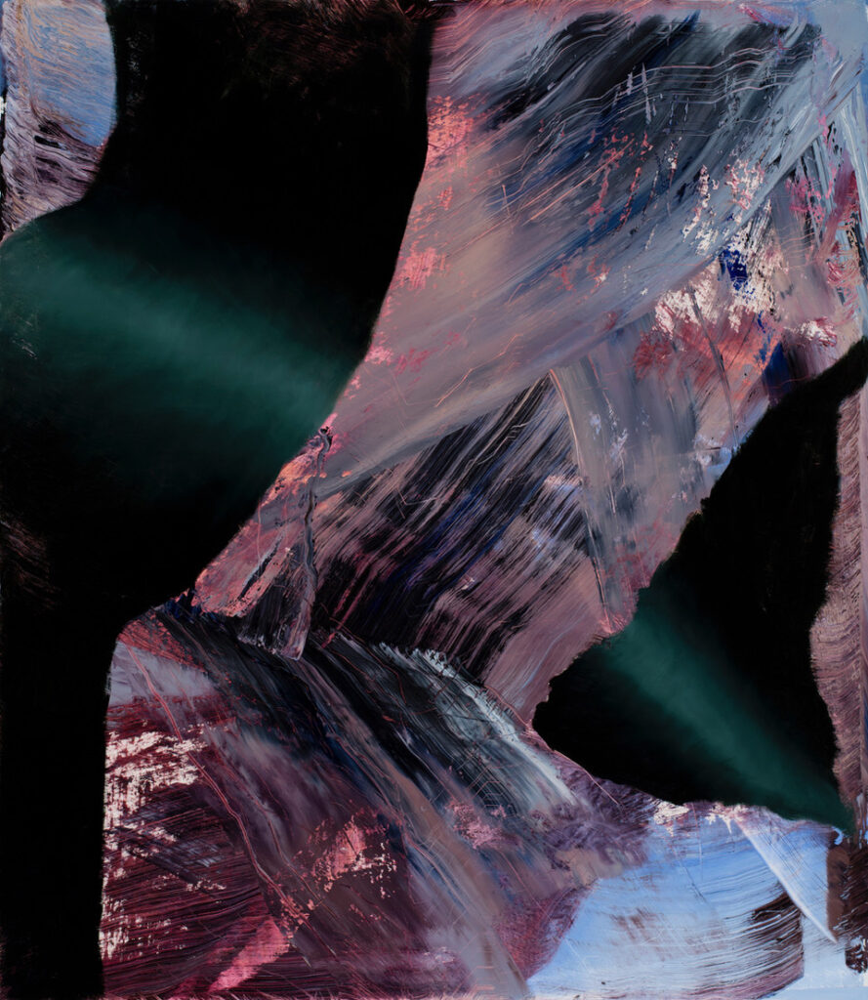

Interview with Jeremy Szopinski

Jeremy Szopinski is a painter and print maker who has exhibited his artwork throughout the Midwest and across the country, including the Woodward Gallery in New York City; the Duluth Art Institute; and Holly Hunt in New York City, Chicago, Miami, Denver, and Seattle.
He has exhibited in metro Twin Cities galleries (galleries within the are of Minneapolis and St. Paul, Minnesota), such as TuckUnder Projects, the Waiting Room gallery, Soo Visual Arts Center, the Speedboat Gallery, and the Phipps Center for the Arts, in Hudson Wisconsin.
Jeremy has created public artworks in collaboration with Ed Charbonneau since 1999. A notable example of these murals can be found in the Minnesota Vikings’ U.S. Bank Stadium in Minneapolis.
Additionally, Jeremy has worked as an adjunct faculty member at the College of Visual Arts in St. Paul and as a senior letterpress printer at Studio On Fire in Minneapolis. He graduated in 1998 from St. Paul’s College of Visual Arts with a Bachelor of Fine Arts in painting, and completed his Masters of Fine Arts in painting at Pratt Institute in Brooklyn in 2010. He works at a painting studio in St. Paul, and lives in Minneapolis.
To view more of Jeremy’s artwork, please visit: www.jeremyszopinski.com
Tintype portrait photograph of Jeremy credit: Carla Rodriguez (to view more of Carla’s tintype portraiture, please visit: www.blkkhand.com)







X #6 / 60” x 52” / Oil on canvas / 2014